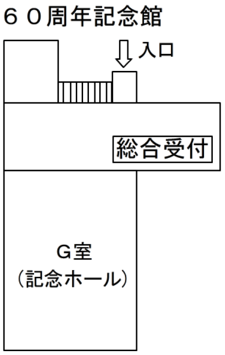
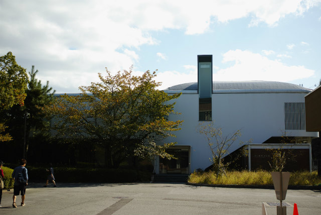

講演会場
初めて来場される際は60周年記念館総合受付で参加登録お願い致します．
| 60周年記念館 | ：総合受付（参加登録），特別講演（1階） |
| ノートルダム館 | ：機器展示，休憩室（1階），OS,SS1,GSの講演（2階-3階） |
中央東門から入って左がノートルダム館，右が60周年記念館
|

|

60周年記念館館入口正面 | ||
|
|
ノートルダム館入口正面 | ||
機器展示（休憩室）ノートルダム館1階
可視化計測に密接した企業展示をご覧いただける場となっております．合わせて休憩コーナーも設けておりますので，是非お立ち寄り下さい．
|
|
|||||||||||||||||||